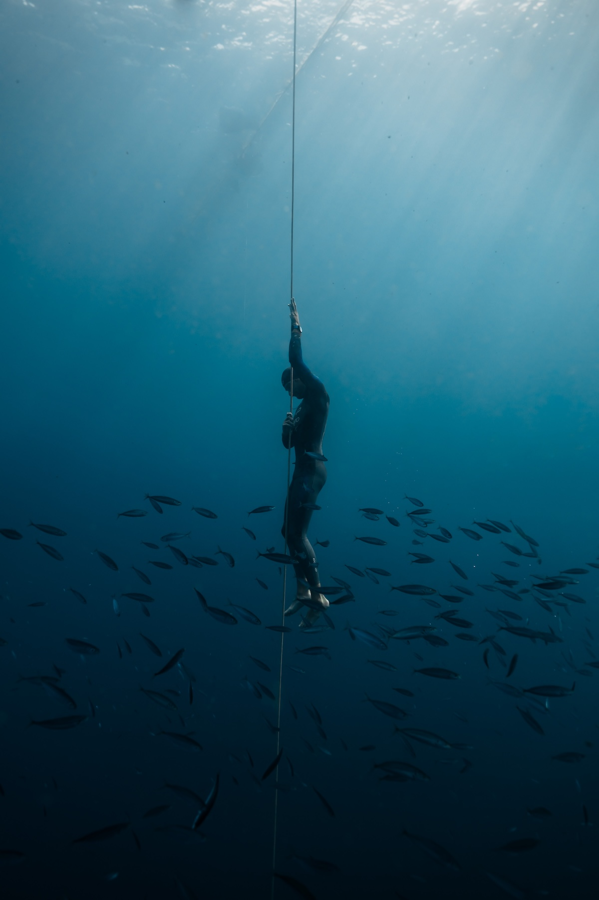
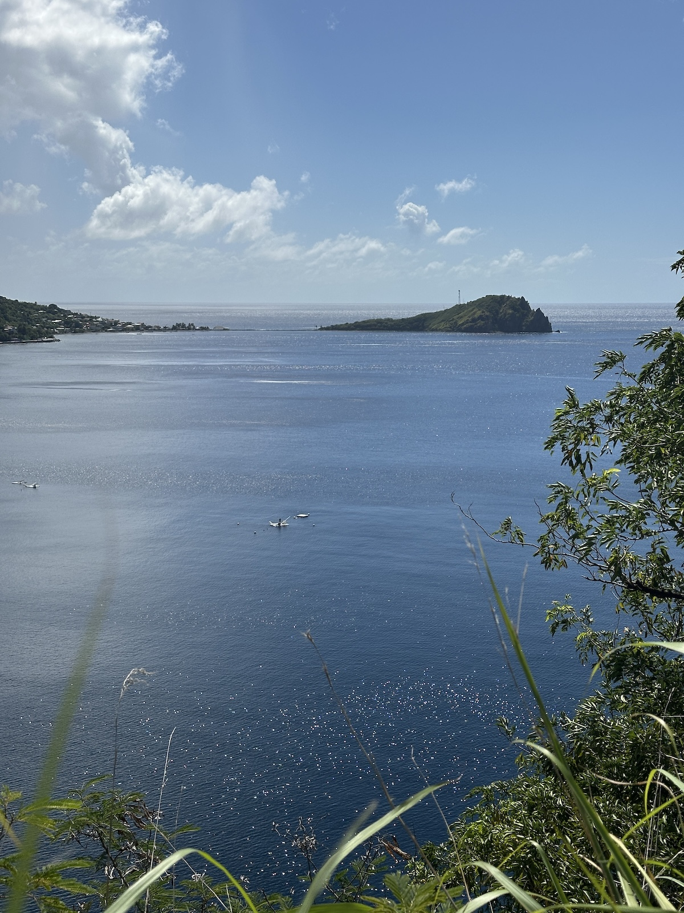
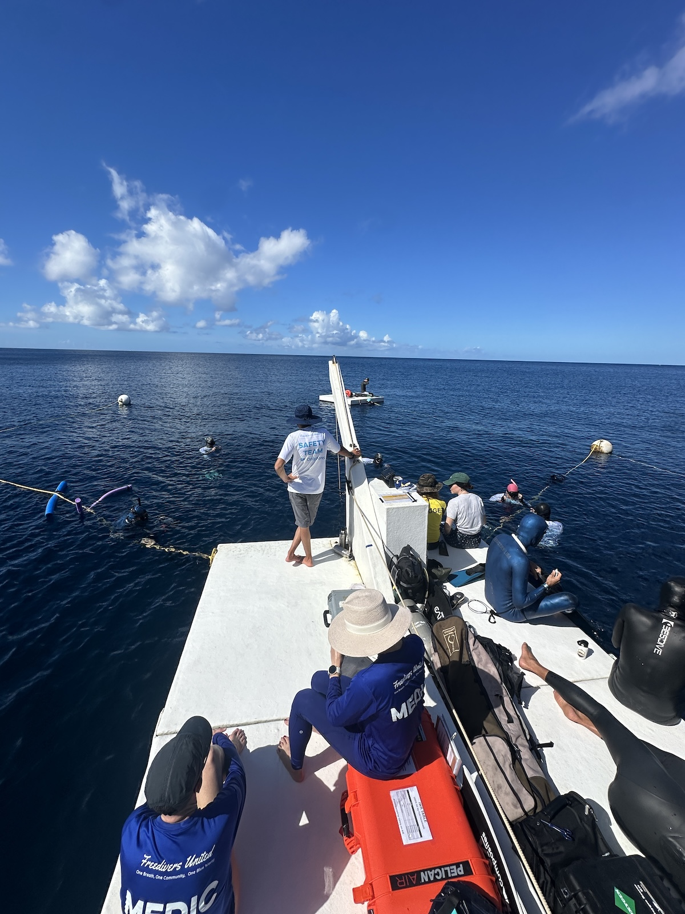
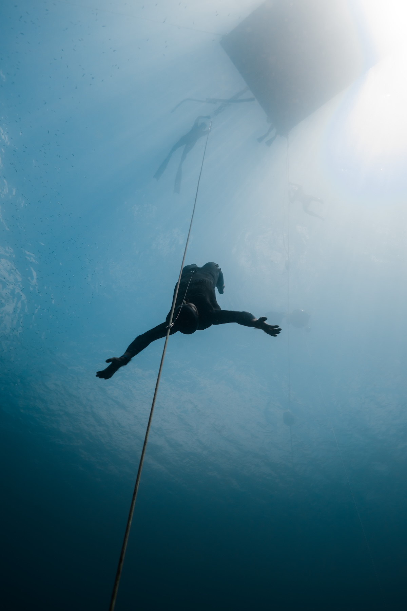
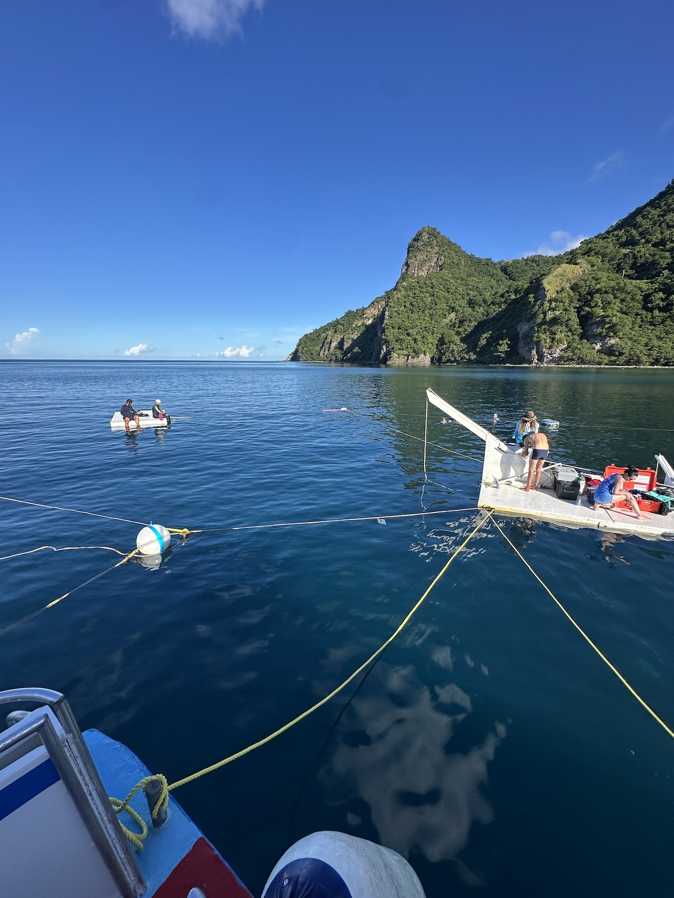

In the water
Champagne Reef
Snorkel over volcanic vents that bubble warm gas up through the reef — a short hop from the bay.

Rainforest, crater lakes and hundreds of waterfalls meet a coastline that plunges straight into the deep. Dominica isn't just where we dive — it's half the reason to come.
Discover Dominica
Dominica is the Caribbean's least-developed, most dramatic island — volcanic, mountainous and almost entirely covered in rainforest. It has the second-largest boiling lake in the world, rivers said to number one for every day of the year, and a marine reserve that begins right at the shoreline.
Soufrière sits on the sheltered southwest coast, inside the Soufrière / Scott's Head Marine Reserve — the flooded crater that gives us our extraordinary diving and you a spectacular place to spend the days between dives.
Beyond the bay
Consistent conditions mean you rarely lose a dive day to weather — so there's always time to see the island that surrounds you.

Snorkel over volcanic vents that bubble warm gas up through the reef — a short hop from the bay.

Trafalgar, Victoria and Emerald Pool, Titou Gorge, and the Waitukubuli National Trail through the rainforest.

One of the only places on earth with resident sperm whales year-round, plus dolphins and abundant marine life.
Travel & logistics
Dominica is wonderfully off the beaten path — here's how to reach Soufrière and what to plan for.
Fly into Douglas–Charles (DOM) via connections in San Juan, Antigua, Barbados or Miami. The new direct routes and the ferry from Martinique & Guadeloupe are great options too.
Soufrière is about 45–60 minutes from the airport on the southwest coast. We'll help arrange a private transfer or taxi — and point you to reliable local drivers.
From guesthouses in Soufrière and Scott's Head to eco-lodges and villas nearby. Tell us your dates and budget and we'll recommend places within easy reach of the bay.
Conditions are excellent year-round. The competition runs in November; the drier months (Dec–May) are popular, but the bay stays calm and warm in every season.

On the water
Our platform sits a few minutes from shore. Boats leave from Soufrière daily, and the same sheltered geography that makes the diving so good makes every crossing flat and easy — even for those prone to seasickness.
Plan your trip
Combine world-class freediving with one of the most beautiful islands on earth. We'll help you build the trip.